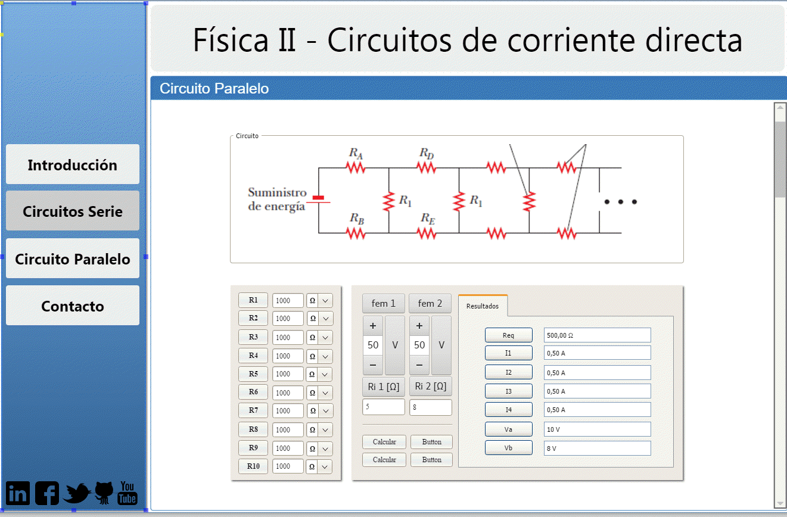

TRABAJO PRÁCTICO Nº 4: Prototipado
Objetivos de aprendizaje
- Adquirir conceptos básicos sobre simulación de circuitos eléctricos.
- Utilizar herramientas que permitan la simulación de circuitos.
Unidad temática que incluye este trabajo práctico
Este trabajo práctico corresponde a la unidad Nº: 7 de la programación de la asignatura.
Consignas a desarrollar en el trabajo práctico
Preguntas
Ejercicios
- Realice sketchs de la UI del “sistema” para generar un ‘Thumbnail Sketchs’ empleando la plantilla de la hoja siguiente.
- Intercambie su diseño de interfaz de sistema con otro grupo, y considere:
- Quitar el menú de navegación superior con el home y adelante y atrás.
- Quitar el login en la parte superior derecha.
- Hacer mas minimalista el home, quitar circuitos mas botones del nav.
- Agregar el footer con los datos del autor y copyright.
- Realice un rediseño de su sistema teniendo en cuenta el documento de sugerencias recibido.
- Emplee algún programa para confeccionar un Mockup. (Ej. https://moqups.com/, https://ninjamock.com, Balsamiq Mockups, Evolus Pencil, Axure, UXpin, Pidoco, Iplotz, Mockflow).
Debe tener en cuenta ¿Qué opciones debe ofrecer al usuario? ¿Qué campos hay para ingresar datos? ¿Hay ejercicios de ejemplo? ¿Hay una introducción teórica? ¿Qué acciones le permiten al usuario realizar? ¿Qué mensajes de error mostrará al usuario? Recuerde realizar los pasos del “Proceso de diseño de Interfaz de usuario”. Si conoce sistemas similares puede utilizarlos de ejemplo para plantear su interfaz. (Se recomienda que en la misma página donde se piden ingresar los datos, muestre los resultados y el gráfico, y permita la conversión de unidades; pero se pueden diseñar pantallas adicionales con ejemplos, ejercicios o contenido teórico)

¿Qué opciones tiene este sistema que no estén disponibles en el propio? ¿Es deseable introducir en un futuro rediseño del sistema estas características? ¿Qué ventajas y desventajas presenta el otro sistema con respecto al propio? Presente un breve documento al otro equipo con el análisis realizado.
Nos solicitan:
Se aplica directamente en el diseño mockup
Usamos Pencil

